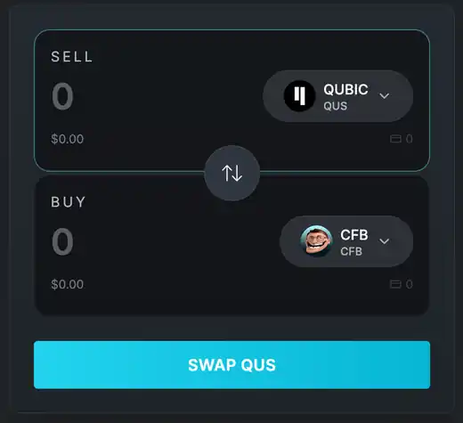
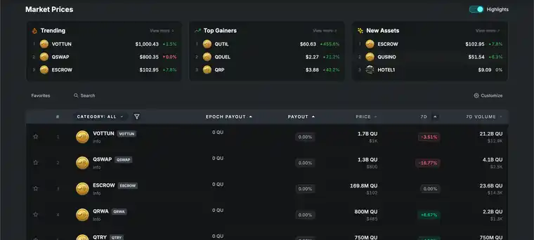
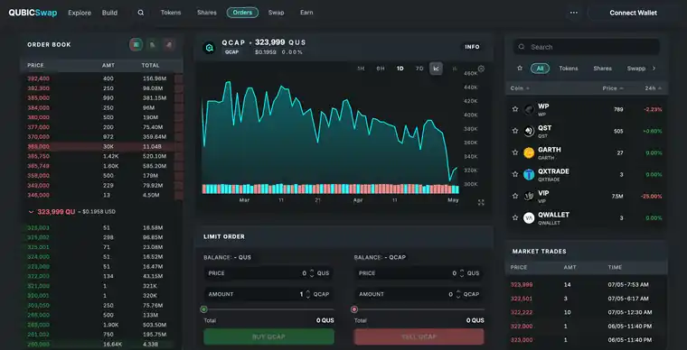
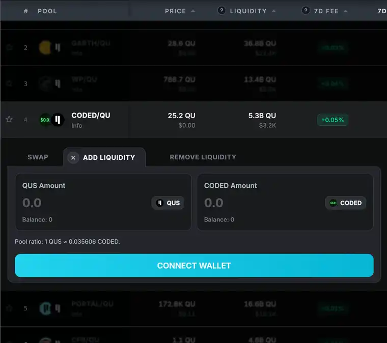

01 / Swap
Swap Qubic tokens
Choose supported ecosystem assets, review the QSwap route and fee context, then approve the transaction in your connected wallet.
Open Qubic token swaps
Built for the Qubic ecosystem
Swap Qubic tokens, trade supported Qubic assets on QX order books, explore share markets, and access QSwap liquidity from one focused interface.
Official ecosystem recognition
QubicSwap is listed as a live Community DeFi project in the official Qubic ecosystem directory.
View the Qubic.org listingOne connected market surface
QubicSwap keeps the information around a trade close to the action, so traders can compare a market, choose a route, and confirm through their wallet.

01 / Swap
Choose supported ecosystem assets, review the QSwap route and fee context, then approve the transaction in your connected wallet.
Open Qubic token swaps
02 / Trade
Inspect bids, asks, recent trades, and market context for supported Qubic token pairs.
Explore Qubic markets
03 / Earn
Review supported liquidity pools and open the QSwap workflow for the market you want to provide.
View Qubic liquidity poolsDirect routes
QubicSwap FAQ
QubicSwap is a decentralized exchange interface for the Qubic ecosystem. It brings supported Qubic token swaps, QX order books, share markets, and QSwap liquidity into one app.
Yes. QubicSwap provides a swap interface for supported Qubic ecosystem tokens and shows route and fee context before wallet confirmation.
Yes. The QubicSwap DEX repository is public on GitHub and links to the live application and its core market routes.
Qubic markets, one app
Open the live DEX or review the public QubicSwap information repository.